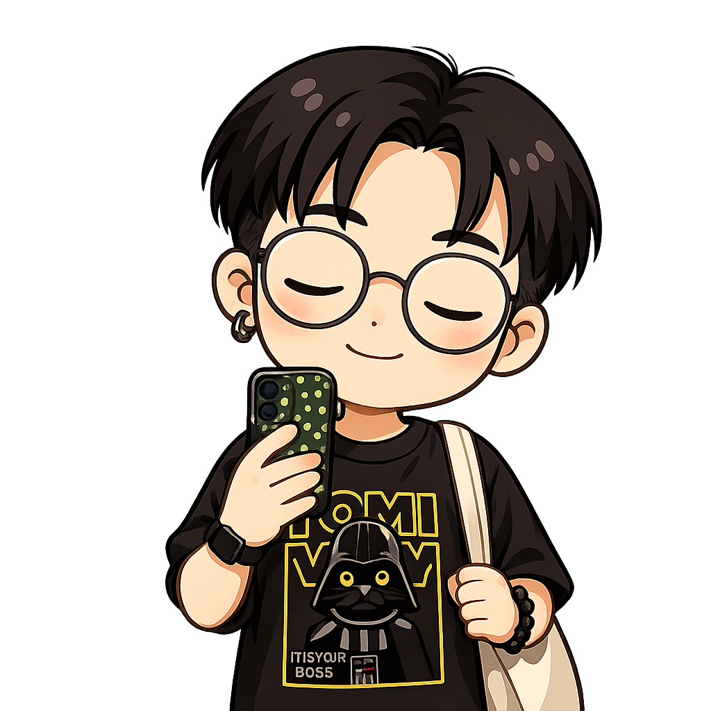
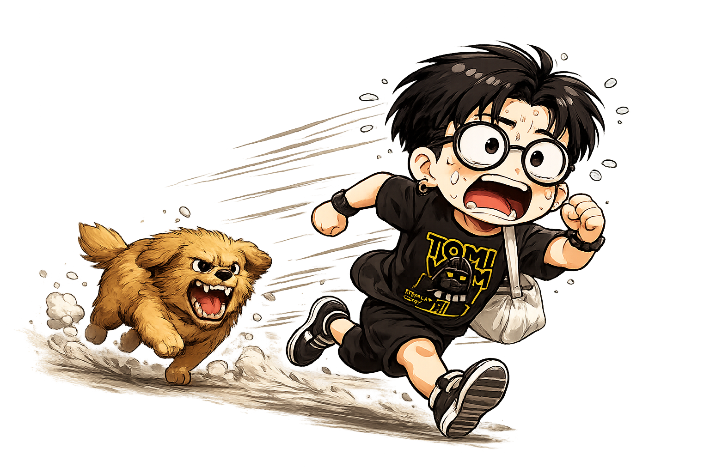

BACKEND ENGINEER. FULL-TIME HUMAN.
A little code.
A lot of curiosity.*
Hey, I'm Net. I build things behind the scenes.
And collect a few good stories along the way.
A perfectly imperfect orbit.

100%HUMAN*
NICE TO MEET YOU. I'M NET.
Serious about code.
Curious about everything.
Behind the scenes Experience & education+
Different worlds.
Same curiosity.
The things I make time for.
No productivity hacks required.
Somewhere
between the pages.
Good stories. Different perspectives.
Slow miles.
Clear mind.
One foot in front of the other.
A little luck.
A lot of strategy.
Cards, collections & good company.
Ideas are better when they grow wild.
Notes, things I've learned, and thoughts still taking root.
Just one more chapter.
A little shelf of finished adventures.
OUT OF OFFICE. INTO MY STRIDE.
Less scrolling.
More running.
Not chasing a perfect pace. Just showing up,
clearing my head, and enjoying the miles.

Always up for
another round.
My corner of the trading card universe.
Good games. Better people.
YOU'VE MADE IT TO THIS SIDE OF THE UNIVERSE.
Let's cross orbits.↗
Talk code, recommend a book, or just say hello.
Say hello ↗Buy Claudy a coffee ☕ +
Claudy runs on tips, not tokens.
Thanks for stopping by.